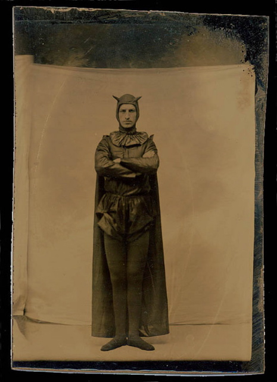

Thursday, October the 25th, 2007
back to: title, date or indexes
A daguerrotype has come into my possession of legendary cantankerous athletics coach Old Halob, taken when he was young. Curiously, he was already known as “Old Halob” when posing for this picture in what was then a revolutionary pole-vaulting kit.
